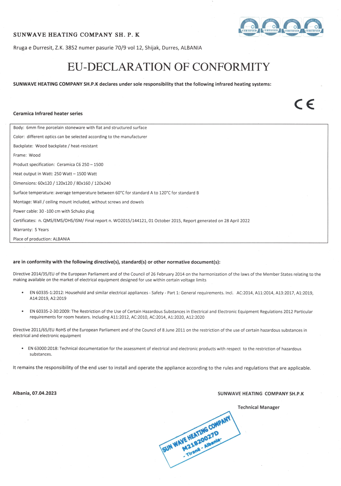
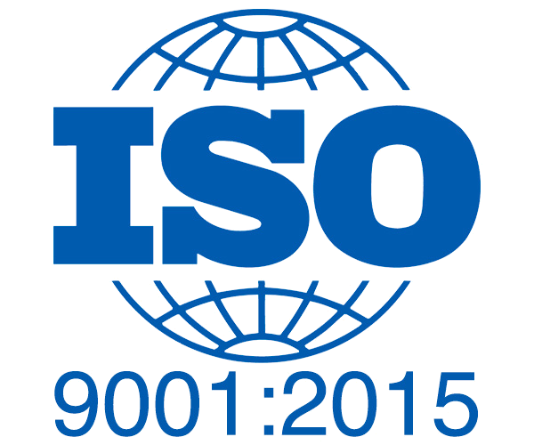
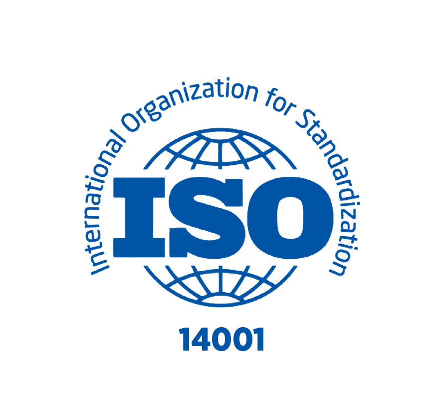

3 Labortests.
Jede Behauptung verifiziert.
Wir bitten Sie nicht, Marketingtexten zu vertrauen. Jede Leistungsangabe zum SunWave Ceramica wird durch einen namentlich genannten Bericht einer unabhängigen, akkreditierten Forschungseinrichtung belegt. Lesen Sie die Daten selbst.
TU Dresden — Strahlungseffizienz nach DIN EN IEC 60675-3
Die TU Dresden ist eine der ältesten und renommiertesten technischen Universitäten Deutschlands. Der Fachbereich Energieeffizienz prüfte das SunWave Ceramica nach DIN EN IEC 60675-3 — dem europäischen und internationalen Standard zur Messung der Strahlungseffizienz von Infrarotheizgeräten.
Der Standard DIN EN IEC 60675-3
DIN EN IEC 60675-3 ("Elektrische Heizgeräte für den Hausgebrauch und ähnliche Zwecke — Teil 3: Verfahren zur Messung der Gebrauchseigenschaften von Infrarot-Heizgeräten") definiert präzise Laborbedingungen und Messverfahren, um zu quantifizieren, welcher Anteil der elektrischen Eingangsenergie als Infrarotstrahlung abgegeben wird, und um zu prüfen, ob das Infrarotspektrum innerhalb des für den Gerätetyp festgelegten Bereichs liegt.
Spitzenwellenlänge: 8,52 µm
Bei einer Betriebstemperatur von 67°C sagt das Wiensche Verschiebungsgesetz die maximale Infrarotemission bei folgendem Wert voraus:
λ_peak = 2'898 µm·K ÷ (67 + 273) K = 8,52 µm
Wiensches Verschiebungsgesetz — unabhängig herleitbar, durch die Messung der TU Dresden bestätigtDer Bereich 8–14 µm ist das langwellige Infrarotband. Es ist genau das Band, das der menschliche Körper sowohl abgibt als auch am effizientesten aufnimmt — dasselbe Band, das die Erdoberfläche und alle Lebewesen für den thermischen Strahlungsaustausch nutzen. Fern-Infrarot im Bereich 8–14 µm dringt in die äusserste Hautschicht ein und wird als sanfte, gleichmässige Wärme ohne Hitzepunkte wahrgenommen.
Warum die TU Dresden das getestet hat
DIN EN IEC 60675-3 ist der strenge Standard, der echte Infrarotheizgeräte (effiziente Strahlungswärmeabgabe) von Produkten unterscheidet, die einfach heiss werden und sich als "Infrarot" bezeichnen. Die Bestätigung der TU Dresden, dass das SunWave Ceramica diesen Standard erfüllt, ist eine unabhängige Verifizierung, dass die Angaben zu Wellenlänge und Effizienz des Paneels zutreffen — keine Marketingaussagen.
Bedeutung für den Schweizer Markt
Schweizer kantonale Energievorschriften (MuKEn 2014) verlangen dokumentierte, messbare Leistungswerte für die Energieeffizienz-Konformität. Die Zertifizierung der TU Dresden liefert genau die dokumentierten, durch Dritte verifizierten Leistungsdaten, die Versicherer, Bauinspektoren und kantonale Behörden erwarten — auch für ergänzende Infrarotpaneele, die zusammen mit einem primären Heizsystem installiert werden.
Unsere vollständige Analyse der TU-Dresden-Testergebnisse lesen →
Fraunhofer WKI — Test zu Raumluftqualität / VOC-Emissionen
Das Fraunhofer WKI ist Europas massgebliches Institut für die Prüfung von Raumluftqualität mit Sitz in Braunschweig, Deutschland. Der Test des SunWave Ceramica adressierte eine zentrale Frage für Käufer, die einen Gaskessel ersetzen: Was gibt dieses Produkt im Betrieb ab?
Warum Raumluftqualität wichtig ist
Gas- und Ölkessel sind Verbrennungssysteme, die Stickstoffdioxid (NO₂), Kohlenmonoxid (CO) und Spuren von Benzol erzeugen — bei unvollständiger Abdichtung des Abzugs auch im Innenraum, und häufig erhöht selbst bei korrekter Entlüftung. Elektrische Raumheizgeräte und manche Halogenheizungen geben bei Betriebstemperatur ebenfalls flüchtige organische Verbindungen (VOC) aus ihren Beschichtungen und Dämmstoffen ab.
In Schweizer Wohngebäuden, die aus Energieeffizienzgründen sehr dicht gebaut sind, können sich Schadstoffkonzentrationen in der Raumluft anreichern. Messungen des Schweizer BAFU (Bundesamt für Umwelt) zeigen, dass die NO₂-Werte in gasbeheizten Schweizer Haushalten häufig über den WHO-Richtwerten liegen.
Was Fraunhofer getestet hat
Der WKI-Test platzierte das SunWave Ceramica in einer kontrollierten Prüfkammer bei Betriebstemperatur und maß die Emissionen flüchtiger organischer Verbindungen über ein vollständiges Spektrum an Zielsubstanzen, darunter:
- Formaldehyd und andere Aldehyde
- Benzol, Toluol, Ethylbenzol, Xylole (BTEX)
- Aliphatische und aromatische Kohlenwasserstoffe
- Chlorierte Verbindungen
- Gesamt-VOC-Konzentration (TVOC)
Ergebnis: 0,043 mg/m³ TVOC — weit unter den gesetzlichen Grenzwerten
Die Gesamt-VOC-Emissionen lagen bei nur 0,043 mg/m³ — weit unter den gesetzlichen Grenzwerten, und es wurden keine krebserregenden Verbindungen nachgewiesen, einschliesslich Formaldehyd, Benzol und Toluol. Die Keramikoberfläche — eine glasierte, inerte mineralische Matrix — hat bei Betriebstemperatur kaum etwas, das ausgasen könnte. Es gibt keine Beschichtungen, Klebstoffe oder Polymere in Kontakt mit der beheizten Oberfläche, die ausdünsten könnten.
Das SunWave Ceramica arbeitet bei einer Oberflächentemperatur von ~67°C. Glasierte Keramik gibt bei dieser Temperatur überwiegend Infrarotstrahlung ab — keine Verbrennungsprodukte, und TVOC-Werte weit unter den gesetzlichen Grenzwerten.
Fraunhofer WKI — Raumluftqualitäts-Test des SunWave CeramicaLabor S.A. — Zertifizierung der elektrischen Sicherheit (EN 60335-2-30)
Labor S.A. führte den jüngsten unabhängigen Test am SunWave Ceramica durch — eine umfassende Zertifizierung der elektrischen Sicherheit, veröffentlicht am 23. Dezember 2024. Der Test erfolgte nach EN 60335-2-30, dem internationalen Standard für ortsfeste elektrische Raumheizgeräte.
EN 60335-2-30: was sie abdeckt
EN 60335-2-30 ("Sicherheit elektrischer Geräte für den Hausgebrauch und ähnliche Zwecke — Teil 2-30: Besondere Anforderungen für Raumheizgeräte") ist der massgebliche Sicherheitsstandard für ortsfeste Elektroheizgeräte, die in Europa und der Schweiz verkauft werden. Er umfasst:
- Grenzwerte der Oberflächentemperatur unter stationären Betriebsbedingungen
- Elektrische Isolation und Ableitstrom
- Schutz vor Überhitzung (anormaler Betrieb)
- Mechanische Festigkeit (Stoss, Vibration)
- Konstruktionsanforderungen (Abstände, Materialien)
- Schutzklasse und IP-Schutzart
Ergebnis Oberflächentemperatur
Der Anstieg der Paneel-Oberflächentemperatur wurde mit 71,2 K über Umgebungstemperatur gemessen. Der Grenzwert nach EN 60335-2-30 liegt bei 80 K. Das ergibt eine Sicherheitsmarge von 8,8 K — etwa 11% Spielraum unter dem Grenzwert. In absoluten Werten erreicht die Paneeloberfläche bei einer typischen Raumtemperatur von 20°C maximal etwa 91°C — übereinstimmend mit der Herstellerangabe von maximal 90°C.
Ergebnis Ableitstrom
Der Ableitstrom wurde mit 0,1 mA gemessen. Der Grenzwert nach EN 60335-2-30 liegt bei 0,25 mA. Das liegt 60% unter dem zulässigen Höchstwert — ein aussergewöhnlich sicherer Ableitstrom für ein 650-W-Widerstandsheizgerät. Der Ableitstrom ist der Strom, der durch die Schutzisolierung fliesst; ein niedriger Ableitstrom bestätigt die Unversehrtheit der doppelten Isolierung der Schutzklasse II.
Zertifizierung der Schutzklasse II
Das SunWave Ceramica ist als Schutzklasse II — doppelt isoliert — zertifiziert. Das bedeutet, es benötigt keinen Erdungsanschluss, um elektrisch sicher zu sein. Geräte der Schutzklasse II verfügen über zwei unabhängige Isolierschichten, die Nutzer vor dem Kontakt mit spannungsführenden Teilen schützen. Das vereinfacht die Installation (kein Erdungskabel erforderlich) und bietet eine zusätzliche Schutzebene gegenüber Geräten der Schutzklasse I.
Bericht 2316.001.3.01 — Labor S.A. — 23. Dezember 2024. Alle Klauseln der EN 60335-2-30 wurden einzeln geprüft. Alle Klauseln: BESTANDEN.
Offizieller Prüfbericht von Labor S.A. — jüngste unabhängige ZertifizierungÜbersicht: Alle drei Tests
Ein Produkt. Drei unabhängige Institutionen. Jedes Ergebnis spricht dafür.
| # | Institution | Standard / Methode | Zentraler Befund | Ergebnis |
|---|---|---|---|---|
| 1 | TU Dresden · Deutschland · Okt. 2022 | DIN EN IEC 60675-3 | Strahlungseffizienz bestätigt · Spitzenwellenlänge 8,52 µm (langwelliges IR) | BESTÄTIGT |
| 2 | Fraunhofer WKI · Deutschland | VOC-Emissionskammertest | Gesamt-VOC-Emissionen von 0,043 mg/m³ — weit unter den gesetzlichen Grenzwerten, keine krebserregenden Verbindungen nachgewiesen | 0,043 MG/M³ TVOC |
| 3 | Labor S.A. · Griechenland · Dez. 2024 | EN 60335-2-30 (alle Klauseln) | Alle Sicherheitsklauseln BESTANDEN. 71,2 K Oberflächenanstieg (Grenzwert 80 K). 0,1 mA Ableitstrom (Grenzwert 0,25 mA). | ALLE BESTANDEN |
Die Physik hinter der Leistung
Wiensches Verschiebungsgesetz
b = 2'898 µm·K
T = 340 K (67°C)
∴ λ_peak = 8,52 µm
Die Wellenlänge der maximalen Emission eines schwarzen Strahlers wird ausschliesslich durch seine Temperatur bestimmt. Bei 67°C Betriebstemperatur emittiert das SunWave Ceramica sein IR-Maximum bei 8,52 µm — genau im langwelligen Band, das für den menschlichen Komfort optimal ist.
Stefan-Boltzmann-Gesetz
ε = 0,043 (Keramik)
σ = 5,67×10⁻⁸ W/m²·K⁴
Die abgestrahlte Gesamtleistung skaliert mit der vierten Potenz der Temperatur. Der gemessene Emissionsgrad der Keramikoberfläche von 0,043 bestimmt, welcher Anteil dieses theoretischen Maximums als echte Infrarotstrahlung abgegeben wird — konsistent mit der von der TU Dresden bestätigten Wellenlängenmessung oben.
Mittlere Strahlungstemperatur
der umgebenden Oberflächentemp.
Komfort = f(MRT, Lufttemp.)
Der thermische Komfort des Menschen hängt nicht nur von der Lufttemperatur ab, sondern von der mittleren Strahlungstemperatur (MRT). Infrarotheizung erhöht die MRT, indem sie Wände und Oberflächen erwärmt — derselbe wahrgenommene Komfort wird bei 2–3°C niedrigerer Lufttemperatur erreicht, was den Wärmeverlust durch die Gebäudehülle direkt reduziert.
Zertifizierungen & Normen
Jede Behauptung wird durch ein Dokument einer unabhängigen Drittpartei belegt. Keine Selbstzertifizierung. Keine Hersteller-eigenen Tests.
TU Dresden — Strahlungseffizienz
IR-Emission bei 8,52 µm Wellenlänge bestätigt. Strahlungseffizienz vollständig normkonform. Technische Universität Dresden, Oktober 2022.
Fraunhofer WKI — Raumluftqualität
Gesamt-VOC-Emissionen von 0,043 mg/m³ — weit unter den gesetzlichen Grenzwerten, ohne Formaldehyd, Benzol oder andere krebserregende Verbindungen. Europas führendes Institut für Raumluftqualität. Vollständiges VOC-Spektrum getestet.
Labor S.A. — Elektrische Sicherheit
Klasse II / IP20. Ableitstrom 0,1 mA (Grenzwert: 0,25 mA). Oberflächentemperatur, Isolierung, Überhitzungsschutz — alles normkonform. Bericht 2316.001.3.01, Dezember 2024.
EP 3 943 558 B1 — Magnetokalorische Paste
Deutsches und europäisches Patent (März 2024), das die Heizpaste aus Kohlenstoff-Nanoröhrchen und Graphen schützt — das Herzstück der Technologie, bestätigt durch die TU Dresden.
Schweizer Kantonale Energievorschriften
MuKEn 2014 verlangt beim Ersatz eines fossilen Heizkessels am Ende seiner Lebensdauer ein erneuerbares System — meist eine Wärmepumpe. Das SunWave Ceramica ist nicht dieses System, ergänzt aber eines auf natürliche Weise: gezielte Infrarotwärme für die Räume, die kalt bleiben — besonders in Kombination mit Solar-PV.




ISO 14001 Umweltmanagement